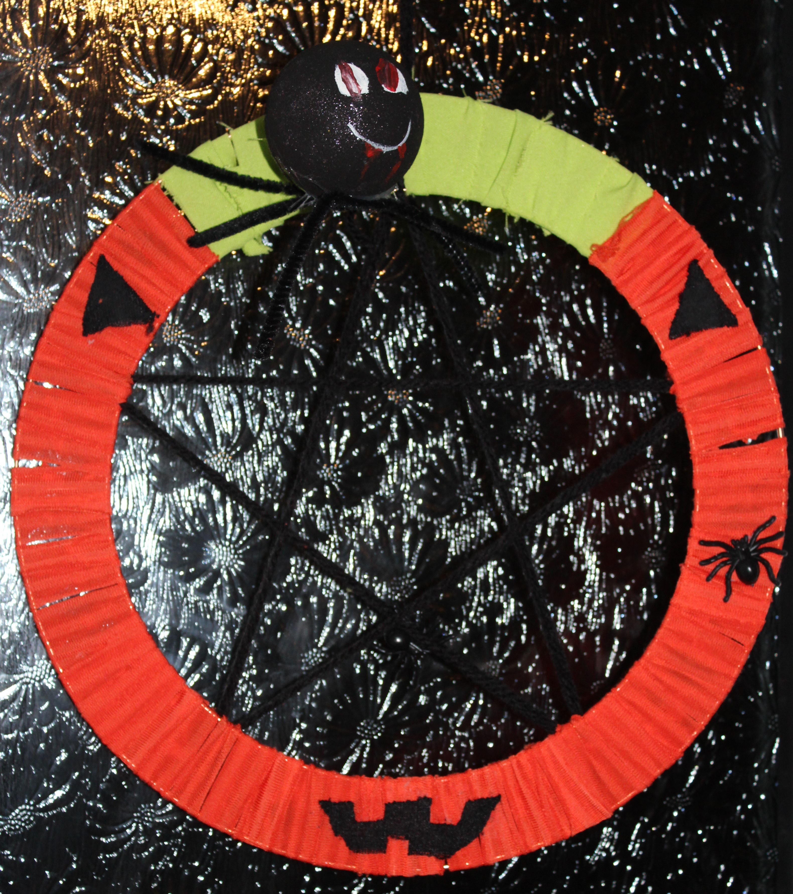
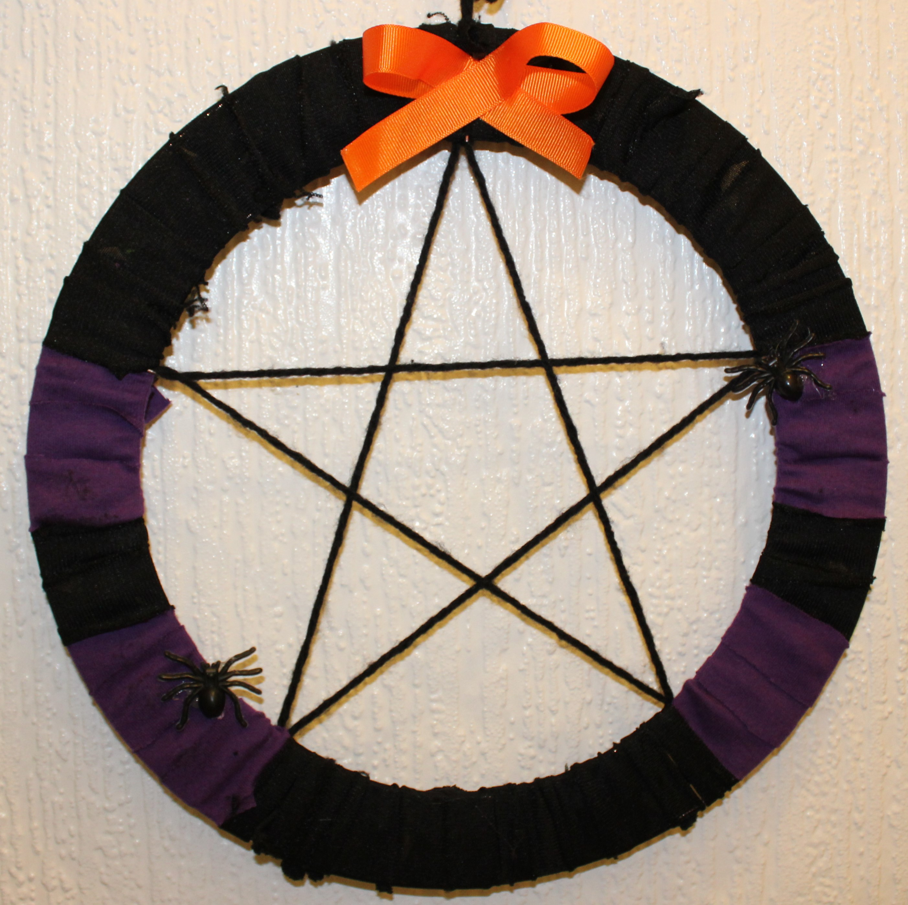
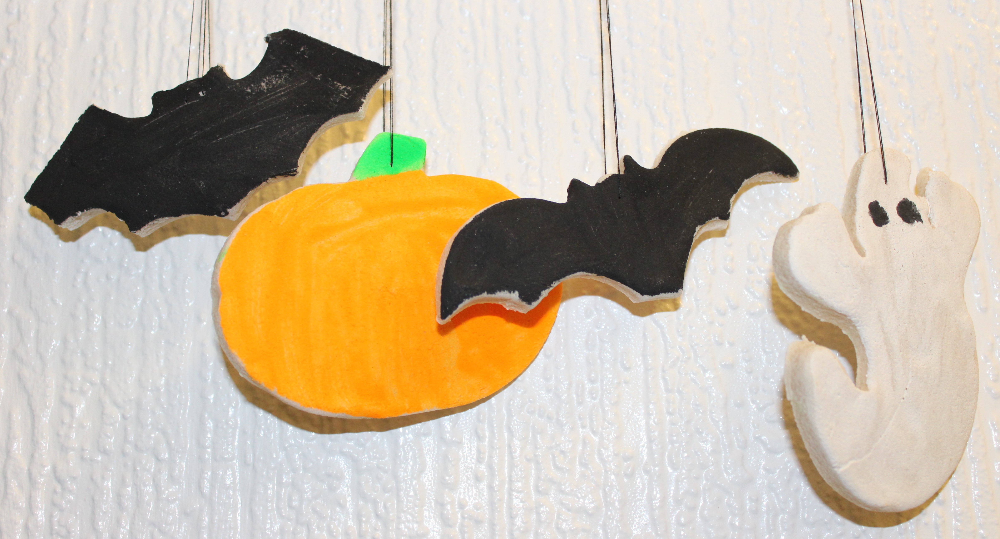
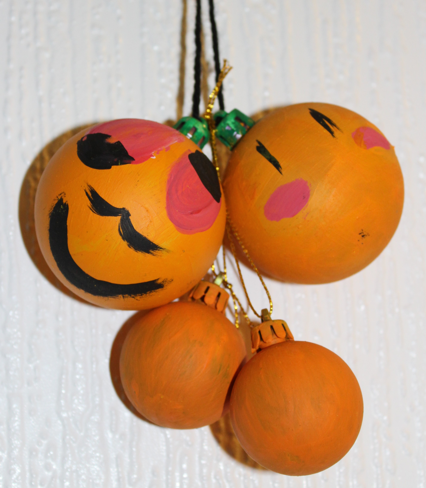

It's almost Halloween.
I'm ready to gnaw through a pumpkin.
I have to apologise. I haven't updated my blog for days. I'm out of my usual routine again thanks to the schools' half term holidays. My little humans headed off on their travels to York, leaving me to the tender mercies of the Big Fella.

My girls visited the Chocolate Story and came home full of treats...glad that they're not Japanese and able to buy pizza flavoured kit kats! They should have had a tour of the city too, but said the guide didn't turn up!
I know it's not Halloween yet, but thinking about that certainly beats contemplating another Everton defeat. As I type, they're losing away at Leicester...
My little humans have been busy making decorations at Create it, Make it. That's a club that teaches them all sorts of craft skills...and keeps the mess at St Mary's Academy rather than our house!
   They've been creative in their After School Club too. The house is full of art work...none of it edible!
However, I'm looking forward to a bit more pumpkin carving. My humans headed off to a pumpkin farm near Hightown yesterday and collected a wheelbarrow full of pumpkins. They're huge! They were very muddy... the pumpkins and my humans, but they've all scrubbed up OK...ready to get covered in pumpkin as they start scooping out the seeds.

29-Oct-2017 | Milku